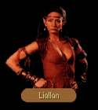

|
|
|  |
|
|
| CHAPTER 4 - FIRST ENCOUNTER |
|
They were not alone. Owyn's pulse quickened as he saw the lone figure approach; but when it became apparent they were not being attacked, he relaxed a bit, squinted slightly in an attempt to see who was about to join them. LIALLAN: I was beginning to believe Delekhan had slain you. He will be infuriated that you escaped. GORATH: You sound imminently pleased at that prospect. Why this charade, Liallan? You can't believe in Delekhan's activities any more than I, and yet you support his cause. You command a respectable tribe and have almost as much power. LIALLAN: Almost? Do you forget who engineered your escape from Sar-Sargoth all those months ago? Who do you think directed Delekhan's rats into the snowplains while Obkhar's family scrambled to safety. That was my doing. If not for my help, the Six would surely have crushed your tribes from the Green Heart. GORATH: Were you responsible for... LIALLAN: ...No, I had nothing to do with your escape this time. Whatever you may have done, you have achieved on your own. Your first escape served my purposes, but your continued survival is as nothing to me. It neither threatens or advances my cause. GORATH: Then you will help me again? LIALLAN: I will consider my efforts an investment against the future of the Northlands, Gorath. They will gain me little now, but perhaps at a later day your help may be useful. I will alert my spies to whatever your needs may be. To be honest, I don't believe you will achieve much beyond your own survival, but even that may prove to be my boon.
|
| DELEKHAN |
GORATH: You consort with a monster, Liallan. Tell us a way and we shall murder him in his sleep. Show us a secret passage and we shall drink his blood and buy the moredhel out of their pact of blood.LIALLAN: And what shall become of us? Moraeulf will then step into his father's place and use our treachery to light the fires under our pursuers. Delekhan must fight this battle and our kin die with him on foreign soil for futile cause. Only then will the other clans who wait to join him know that we cannot unify under a banner of death.
GORATH: Their failure taught them no lesson after Murmandamus betrayed us in the field and this shall come to no new conclusion!
LIALLAN: We want the same things, Gorath, though I intend to claim what you fear. I will take the throne of the Nations of the North when Delekhan has fallen to Kingdom blades. I will lead...
GORATH: ...I don't know whether I should laugh or weep at that suggestion, Liallan, but I favor you over his bastard get Moraeulf.
| NALAR'S RIB (if Spynote) |
GORATH: There have been few occasions I have had to visit Nalar's Rib. I forget its location.LIALLAN: It lies south of here, as the crow flies, a few minutes from the front gates of Sar-Sargoth. I have not been there in a long while.
| FREEDOM |
GORATH: Again, I must seek help in the Kingdom. Prince Arutha's army must be there to meet Delekhan.LIALLAN: It may prove more difficult than you imagine. Delekhan has called for Narab's head.
GORATH: Why should that be? If not for Narab, I would still be loose in the Kingdom...
LIALLAN: I do not know what fires burn in his mind, but they smoke like madness to me. Narab has called on his clan to surround us, though they can be little threat to us here. The Six will crush them hopelessly, but they can restrict us for a time.
GORATH: The more that Narab plays the fool, the more time it will gain us, though I could wish he were doing it elsewhere. Is there no way past his clan?
LIALLAN: Not unless you may know how to bring down the dark god's wrath from Nalar's Rib, I can't imagine a way until the Six arrive.
| THE BATTLE |
GORATH: For what goal does Delekhan do this? There can be nothing gained by attacking a single castle on the frontier of the Kingdom.LIALLAN: He tells those who rally to him that Murmandamus lives, that he is captive within the Kingdom and that he intends to free him from captivity. None saw him die at Sethanon.
GORATH: And what advantage is there in that for Delekhan? Step aside and let Murmandamus retake his place on the throne? I would easier believe you the mistress of death than Delekhan one who longs for his ancient master.
LIALLAN: It would seem then there is one among the moredhel who thinks. I too have wondered at what he wishes to gain and I may only conclude he plots to get something from Murmandamus in exchange for freeing him. He had great powers, greater even than the Six who now work for Delekhan. Perhaps he believes he can learn the secrets of our former leader's powers.
| THE SIX |
GORATH: Whence did Delekhan's magicians come? They were spoken of in Harlech before first I left the Northlands. Do they advise?LIALLAN: And more. They plan great schemes into the night with him, meetings to which even I am no longer privy. They are the ones who recommended the extermination of your tribe. They speak of the low born as if their lives are without value. It is as if they live for the complexities of intrigue. Little else seems to matter to them.
GORATH: When they buy their wine, with what coins do they bargain?
LIALLAN: None. They carry only gems, rubies of low quality. They toss them about as if they were as common as seeds.
GORATH: They abide in Sar-Sargoth?
LIALLAN: When they are with Delekhan. At the moment they have gone south with Moraeulf to Harlech. I believe they mean to round up others of your tribe who have been reluctant to join Delekhan's throng.
| CHAPTER 4 - SECOND ENCOUNTER |
|
They were not alone. Owyn's pulse quickened as he saw the lone figure approach; but when it became apparent they were not being attacked, he relaxed a bit, squinted slightly in an attempt to see who was about to join them. LIALLAN: Why are you doddering here? Your only clear path to freedom lies through the Inclindel. Is there something else you need?
|